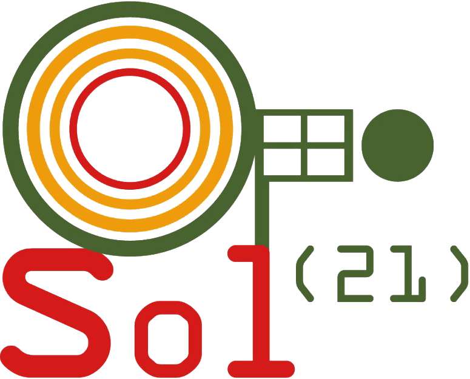

Sol21
Conexión y Transversalidad S.A. De C.V.
A Mexican company devoted to the integration of technologies and processes to better serve society through uniquely tailored solutions
The base of our business is to respect local cultures, generating a cascade of opportunities for commerce and education in an equitable manner, supporting the conservation of the environment